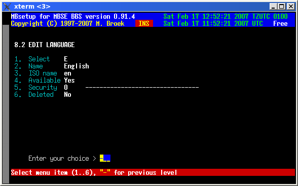

Last update 16-Dec-2001
MBSE BBS Setup - BBS Setup - Language Setup.
Language introduction.
You need to define at least one language, this is the default language.
The paths to the BBS menus and Txtfiles for the default language
must be exactly the same as defined in the global setup, menus 1.3.1 and 1.3.2
I did this so you can make your
own local languages next to the default languages. If something is not
present in your local language, the BBS will fall back to the default
language. This is true for the menus and textfiles for the BBS. It is
therefore wise to name all menus and textfiles the same for all languages used.
When you setup the languages for the first time, entries for English, Dutch,
Spanish, Galego, Italian and German languages are created.
Language setup.
Select The letter to select this language. Name The name of this language. Menupath The path to the menu files. Textpath The path to the ANSI and ASCII textfiles. Macropath Not in use yet. Available If this language is available. Datafile The name of the language datafile in ~/etc Security The minimum security level to select this language. Deleted If this language must be deleted.
